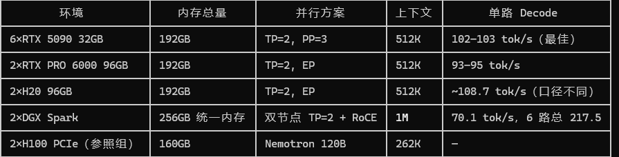

洛铃🦊Magic Caster
@LolingVerse
@BoxMrChen 这下宝妈创业新思路了😁

Box (mainnet arc)
@BoxMrChen
我忽然想到一个问题。DS V4 Flash配合两台DGX的性能已经如此强大了，如下图
那以后是不是宝妈在家卖Token创业岂不是真可以实现？？
现在MiniMax H3也能在DGX上跑，投入成本6万左右，后续只要有DGX能跑的模型就能一直更新模型卖算力。
谁说宝妈不能睡觉赚钱，这不是妥妥的睡后收入吗？ https://t.co/KjJHhFOnLs https://t.co/jo3ir0TGEz